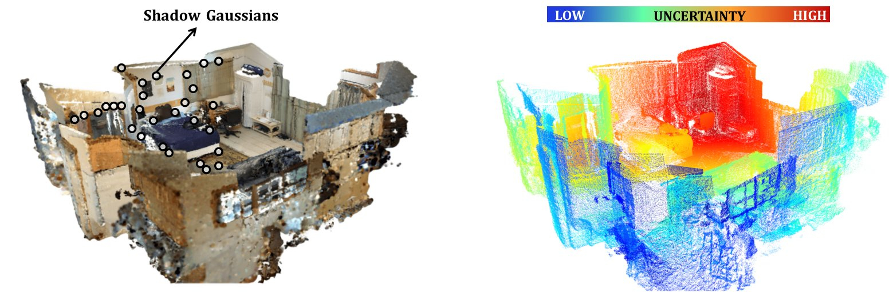
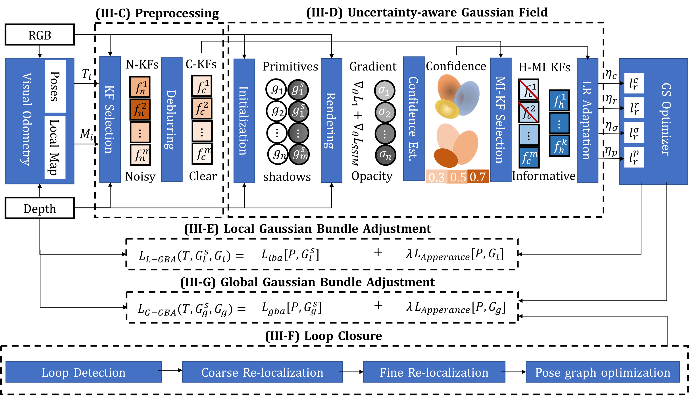
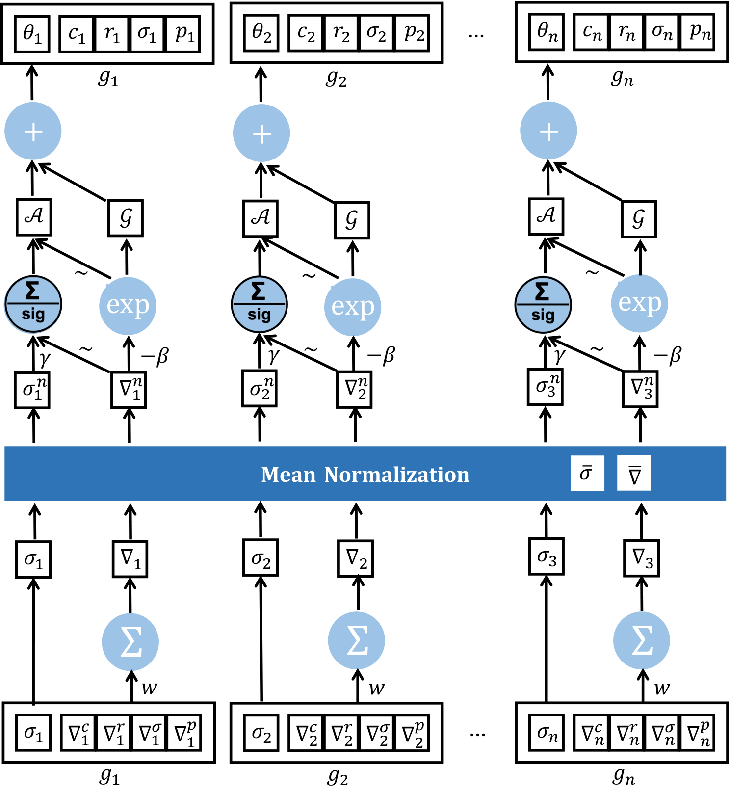
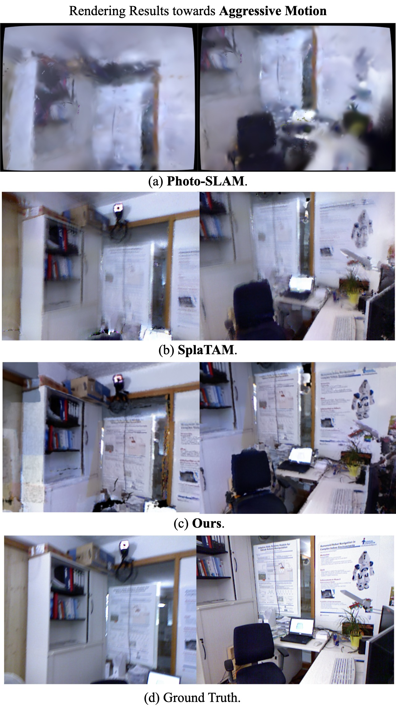
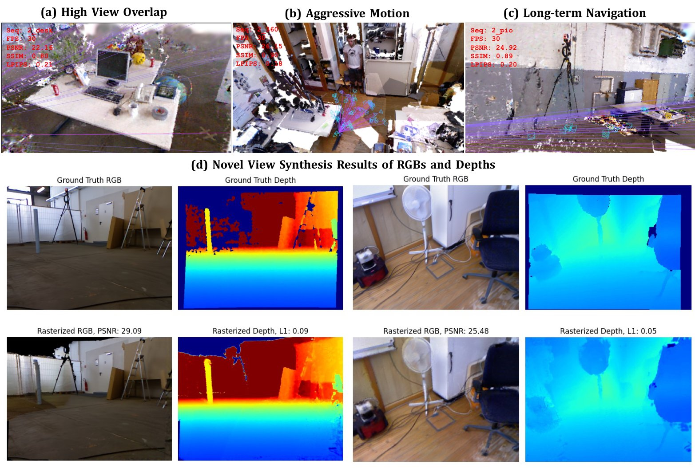
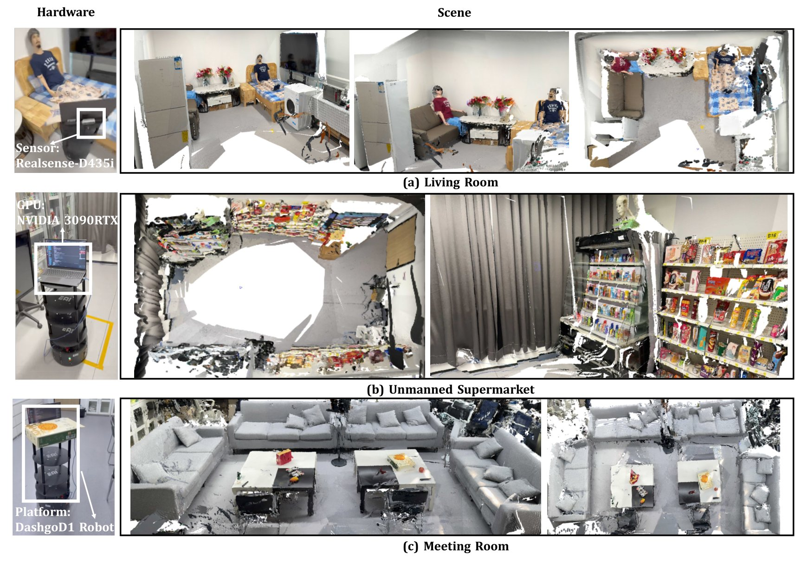

One per-primitive confidence value drives every major decision of the SLAM system —
keyframe selection, optimization, tracking, and loop closure.
Live mapping at native speed: the photorealistic Gaussian field grows incrementally while the per-primitive confidence field (blue: low, red: high) governs what the system trusts.
μSLAM is a real-time RGB-D SLAM system (>30 FPS on a single GPU) built on 3D Gaussian Splatting. Every Gaussian primitive carries an explicit confidence value, computed analytically from optimization dynamics at O(N) cost. This single quantity closes the loop on every major decision the system makes.

Per-primitive confidence estimated from gradient and opacity dynamics, with formally analyzed properties: boundedness, monotonicity, boundary conditions.
Rendered confidence approximates expected information gain — only ~10.5% of frames are processed, at higher quality than classical heuristics.
"Cautiously aggressive" per-primitive learning rates with a proven convergence guarantee: rapid correction where uncertain, fine-tuning where converged.
Confidence-weighted photometric residuals stop unreliable map regions from biasing pose estimation.
Coarse-to-fine correction on a unified sparse–dense map; refinement residuals set the pose-graph edge covariances.
>30 FPS end-to-end with asynchronous mapping; runs onboard an RTX 3090 for robot deployments.
A multi-stage, uncertainty-driven pipeline: a pre-processing front-end safeguards data integrity, an uncertainty-aware back-end builds and refines the map, and an integrated coarse-to-fine loop closure guarantees global consistency.


State-of-the-art tracking and rendering among rendering-based methods, with the robustness and speed required for real robots.
| Method | Loop closure | Real-time | desk | desk2 | room | xyz | office | Avg. ↓ |
|---|---|---|---|---|---|---|---|---|
| SplaTAM | ✗ | ✗ | 3.35 | 6.54 | 11.13 | 1.24 | 5.16 | 5.48 |
| Photo-SLAM | ✗ | ✗ | 1.87 | 2.86 | 5.77 | 0.38 | 1.42 | 2.46 |
| 2DGS-SLAM | ✓ | ✗ | 1.84 | 2.76 | 5.98 | 1.16 | 1.97 | 2.74 |
| μSLAM (ours) | ✓ | ✓ | 1.67 | 2.45 | 5.35 | 0.30 | 1.42 | 2.24 |
Tracking accuracy (ATE RMSE, cm) on TUM-RGBD. Full benchmarks — including ScanNet, robustness, and ablations — are reported in the paper.


Fully onboard (RTX 3090) online mapping on a wheeled robot across three environments. The resulting maps directly support geometric navigation (98.3% success) and language-conditioned semantic navigation (90.0% end-to-end success).
